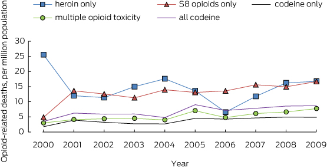

About 14% of U.S. high school students report misusing prescription opioids at least once. This means almost 1 out of every 7 teens has tried opioids that weren't prescribed to them. That's a lot of young people putting their health at risk. Many of them start because they think prescription drugs are safer than street drugs, but that's not true. This number shows that opioid misuse is a big problem for teenagers across the country.
About 8.5 million adults misused prescription opioids in 2022. This is a huge number of people struggling with opioid addiction and misuse. Many adults started using opioids because a doctor gave them for real pain, but then they got addicted. Some adults share their pills with other people, which spreads the problem even more. The more adults who misuse opioids, the more overdose deaths we see.
Illinois recorded more than 3,200 opioid overdose deaths in 2022. That's more than 8 people dying every single day from opioid overdoses in just one state. These are real people with families, friends, and futures. Many of these deaths could have been stopped with better help and treatment. Illinois is working hard to fight this crisis, but we all need to help by staying safe and telling others about the dangers.
Cook County reported more than 2,000 opioid related overdose deaths. Cook County includes Chicago and many surrounding areas, making it one of the hardest hit areas in the country. This means the Chicago area has a really serious opioid problem. Many of these deaths are happening in our own neighborhoods. Knowing what's happening in our community helps us understand why learning about drug dangers is so important.
